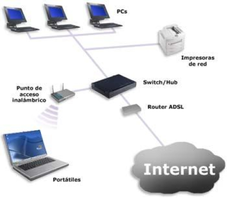

Fundamentos de redes S4
Fundamentos de redes
Internet es solo una interconexión de computadoras de todo el mundo, como una tela de araña gigante que nos une
a todos. A la interconexión de computadoras la llamamos red. Las computadoras en una red pueden comunicarse y
enviar datos entre sí. Al final, tienes miles de millones de computadoras interconectadas, que constituyen lo
que llamamos Internet.
• Internet es la conexión física de computadoras y cables por todo el mundo.
• La Web es la información en Internet.
En el campo de TI, la administración, el desarrollo y el diseño de redes se conocen como tecnología de
redes o, simplemente, redes.
Internet se compone de una red masiva de satélites, redes celulares, y cables físicos bajo tierra. Unas
computadoras llamadas servidores se conectan directamente a Internet. Los servidores almacenan
los sitios web que usamos. Estos sitios web entregan contenido.
Las máquinas que usamos, como nuestros teléfonos móviles, laptops, videojuegos, consolas y más, se llaman
clientes. Los clientes solicitan contenido, como imágenes o sitios web, desde los
servidores.
Los clientes no se conectan directamente a Internet. En cambio, se conectan a una red administrada por un
proveedor de servicios de Internet o ISP (Internet Service Provider) Los ISP
ya desarrollaron redes y tendieron todo el cableado físico necesario que conecta millones de computadoras juntas
en una red. También se conectan a otras redes y a otros ISP. Juntas, forman una red gigante de computadoras
llamada Internet.
Las computadoras en una red tienen un identificador llamado dirección IP.
Los dispositivos que pueden conectarse a una red tienen otro identificador único llamado dirección
MAC. Las direcciones MAC son por lo general permanentes y están codificadas en un dispositivo.
Cuando envías o recibes datos a través de una red, necesitas tener una dirección IP y una dirección MAC.
Los datos se envían a través de una red por medio de paquetes. Cuando movemos datos a través de
la red, los dividimos en paquetes. Cuando un paquete llega a su destino, se volverá a ordenar.
Hardware de redes
Hay muchas maneras de conectar computadoras a una red:
• Existe un cable Ethernet, que te permite conectarte físicamente a la red.
• Otra forma de conectarse a una red es a través de Wi-Fi, que es la red inalámbrica.
• El último método que veremos usa cables de fibra óptica para conectarse a una red. Mueven
datos a través de la luz.
El primer dispositivo al que se conecta su computadora es un router. Un router conecta muchos
dispositivos diferentes y ayuda a enrutar el tráfico de la red. Tú deseas enviar un archivo de la computadora A
a la B. Nuestros paquetes pasan por el router, que utiliza protocolos de red para ayudar a determinar a dónde
enviar el paquete.
Los conmutadores (switches) y los concentradores
(hub) también son dispositivos que ayudan a nuestros datos a viajar. Piensa en los conmutadores
como salas de clasificación de correspondencia en un edificio. Los routers llevan nuestras cartas al edificio.
Pero una vez que estamos dentro, usamos la sala de clasificación, conmutadores, para averiguar adónde enviar una
carta. Los concentradores son como memos de la empresa. No saben a quién enviar el memo, entonces se lo envían a
todos. El problema es que la señal se transmite a través de todos los puertos.

Una pila de tecnologías, en este caso una pila de red o pila de protocolos (Network
stack), solo es un conjunto de hardware o software que brinda la infraestructura para una computadora.
Entonces, la pila de red incluye a todos los componentes que forman la red de computadoras.
El lenguaje de Internet
Piensa en los protocolos de red como un conjunto de reglas sobre cómo transferir datos en una red. Hay reglas
que aseguran que nuestros paquetes:
• se envían eficientemente
• no están corrompidos
• son seguros
• van a la máquina adecuada
• están nombrados adecuadamente
El Protocolo de Control de Transmisión y el Protocolo de Internet, o
TCP/IP.
El Protocolo de Internet o IP, es responsable de entregar nuestros paquetes a los equipos correctos.
El Protocolo de Control de transmisión o TCP, es un protocolo que se encarga de una entrega fiable de la
información de una red a otra.
La Web
Los sitios web son básicamente documentos de texto que son formateados con HTML, o lenguaje de marcado de
hipertexto.
Cuando deseas navegar en un sitio web, escribirías un URL como www.reddit.com. Un URL,
significa "Uniform Resource Locator" (Localizador Uniforme de Recursos).
• El www en el URL significa "World Wide Web" (Red Mundial).
• La segunda parte, reddit, es algo que llamamos un nombre de dominio. Una vez que se toma un nombre,
este se registra en la ICANN, la Corporación de Internet para Nombres y Números asignados.
• La última parte del URL es .com. Pero también se pueden utilizar terminaciones de dominio diferentes
como reddit.net o reddit.org. Las diferentes terminaciones del nombre de dominio son
estándares para el tipo de sitio web.
El formato general de un URL es: :esquema://máquina/directorio/archivo
Resulta que la dirección IP, 172.217.6.46 se asigna a la página principal de Google a través de un protocolo
web, un Sistema de Nombres de Dominio o DNS. El DNS actúa como un directorio
de internet y nos permite usar palabras legibles por humanos para asignar a una dirección IP. Cada vez que vayas
a un sitio web, tu equipo está realizando una búsqueda de DNS para encontrar la dirección IP del nombre del
sitio web que escribiste.
Así que si eres capaz de acceder a una página web por su dirección IP pero no por su nombre de dominio legible
para el ser humano, entonces es muy posible que haya un problema en algún lugar de la configuración DNS que está
usando tu red.
La historia de Internet
A fines de la década de 1960, el gobierno de los Estados Unidos lanzó un proyecto llamado DARPA. Se propuso
crear la primera versión de Internet tal como la vemos hoy por medio de ARPANET. Con el tiempo, los
programadores de computadoras pudieron compartir un solo recurso informático al acceder de forma remota a la
computadora.
Las redes no podían comunicarse entre sí. No fue hasta la década de 1970 que hubo un avance crítico en redes
informáticas que solucionó este problema. Fue gracias a los científicos informáticos Vinton Cerf y Bob Kahn,
quienes crearon el método que llamamos Protocolo de control de transmisión, o TCP, y el Protocolo de Internet, o
TCP/IP.
Luego, en los años 90, un científico informático llamado Tim Berners-Lee inventó la World Wide Web. Usaba
diferentes protocolos para mostrar información en páginas web y se convirtió en la forma predominante de
comunicación al acceder a Internet.
Limitaciones de internet
El actual protocolo, el Protocolo de Internet versión 4 o IPv4 es una dirección que consta de 32 bits separados
en cuatro grupos. Recuerda, 32 bits son cuatro bytes y un byte puede almacenar hasta 256 valores, de 0 a 255.
Hay menos de 4,3 billones de direcciones IPv4.
Las direcciones IPv6 son de 128 bits, cuatro veces la cantidad que utiliza IPv4. Con IPv6 hay 2 elevado a 128
posibles direcciones IP.
Otra herramienta de mitigación que hemos sido capaces de utilizar es NAT o Network
Address Translation (Traducción de direcciones de red). Esta permite a las organizaciones utilizar una
dirección IP pública y muchas direcciones IP privadas dentro de la red.
https://es.ccm.net/contents/267-direccion-ip
 Índice
Índice